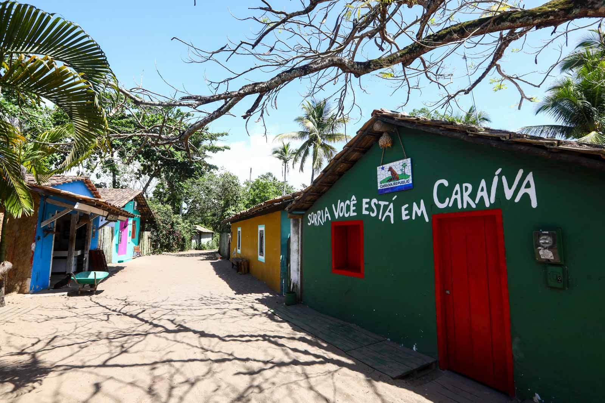

Mesmo no nosso caos, continuavamos colecionando momentos especiais: risadas, viagens, passeios, comidas, sexos malucos,
bebedeiras, filmes e séries legais. Fomos entrelaçando nossas famílias, eu cada vez mais próximo da dela e ela cada vez mais próxima
da minha, entrelaçando amigos, entrelaçando planos e fazendo coisas pra eles darem certo. Um motivando o outro a ser melhor, mesmo ela
fazendo isso de uma maneira meio pinscher, fomos melhorando como pessoa em um geral, juntos.

E quero continuar fazendo isso: cada vez me aproximar mais de você, me esforçar cada dia pra ser melhor pra você e cada vez entrelaçar nossas vidas com você, concretizando todos
nossos planos e fazendo todos darem certo.
Esse ano vai ser meio difícil pra gente, pois preciso finalizar um ciclo e fazer um dinheirinho pra gente continuar a concretizar nossos planos,
então acredito que não vá ser tão emocionante igual os nossos passados. Porém quero te fazer um convite: vamos pra Caraíva dia 17/04/2025 colecionar
mais uns pores do sol? Tá meio longe mas já quero começar a concretizar um plano muito importante.